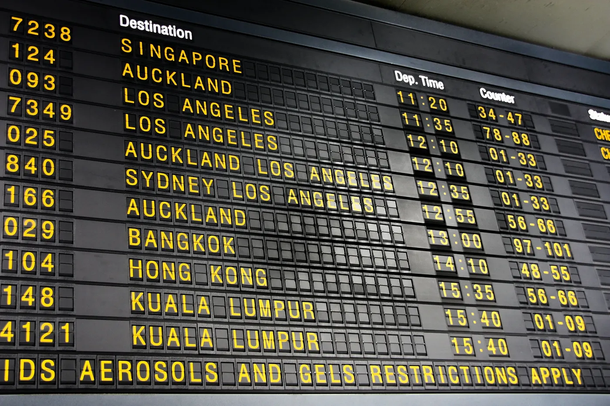

나를 기억하는 상대
어제 한 말을 기억하고 오늘 이어서 물어요. 단골 카페 점원처럼요.
어… 하고 막힌 그 말이 다음 날 내 교재가 되는 영어 말하기 프로그램이에요.
하루 10분 · 0원 · 내 대화 또는 일상 상황
듀오링고는 반복만 시켰고
말해보카는 왜 하는지 몰랐다.
그래서 둘 다 끊었다.
남긴 건 영상통화와
정확한 발음, 이 둘.
둘 다 결제해서 써 봤어요. 반복은 진전이 안 느껴졌고, 발음은 좋았지만 계속할 이유가 없었어요.
먼저 말해요. 레슨 고르기 없이 상대가 바로 말을 걸어요.
그다음 멈춘 곳, 한국어로 바꾼 곳, 끊긴 문장을 찾아요.
그 말만 연습해요. 하려던 말의 영어 문장과 발음을 잡아요.
다음 날 상대가 그 말을 쓸 수밖에 없는 질문을 해요. 두 번 쓰면 끝.
앱을 열면 레슨 목록이 아니라 상대의 말이 먼저 나와요. 어제 내가 한 얘기를 기억해서 이어 물어요. 그 아래엔 어제 막혔던 말 세 개가 오늘 써 볼 말로 올라와 있어요.
마이크를 켜면 진짜로 들어요. 1.2초 넘게 멈추면 파형에 빨간 칸이 생기고, 'ended up', 'took me', 'about to'를 말하면 위 칸이 채워져요. 마이크가 없으면 '예시 보기'로 막히는 대답 하나를 볼 수 있어요.
첫 화면만 크게 열기 →숫자를 모으는 걸로는 계속 오지 않았어요. 사람, 소리, 바깥, 내 이야기로 붙잡아요.
어제 한 말을 기억하고 오늘 이어서 물어요. 단골 카페 점원처럼요.
매주 같은 질문에 다시 답해요. 빨간 구멍이 줄어드는 게 보이고 들려요.

4주마다 진짜 사람 앞에서. 영어로 주문, 길 안내, 3분 발표 녹화.
한 달 동안 말한 문장이 내 이야기 한 권이 돼요. 내 목소리로 다시 들어요.
나는 내 대화로, 다른 사람은 일상 상황으로 해요. 정보를 넣으면 장면이 맞춰지고, 비워 두면 상황만 골라 바로 시작해요.
| 오늘 한 일 | Jamie, 친구 | I ended up … | 3분 |
| 만들고 있는 것 | Jamie, 친구 | It took me about … | 3분 |
| 4주 시합: 프로젝트 발표 | 진짜 사람 | Let me walk you through … | 3분 |
| 카페 주문 | 바리스타 | Can I get … to go? | 3분 |
| 길 묻기 | 지나가는 사람 | How do I get to …? | 3분 |
| 자기소개 | 새로 만난 사람 | I'm really into … these days. | 3분 |
| 병원 접수 | 접수처 | I've had a … since … | 3분 |
| 공항 체크인 | 카운터 직원 | Could I get an aisle seat? | 3분 |
| 아무것도 안 고르면 | 오늘의 상대 | 하루 한 장면 | 3분 |
| 하는 일 | 선택 | 학생이면 수업·과제 장면이 늘어요 | |
| 관심사 | 선택 | 상대가 꺼내는 이야깃거리 | |
| 영어 쓸 곳 | 선택 | 여행이면 공항·호텔부터 | |
| 지금 수준 | 선택 | 상대의 말 빠르기와 단어 |
세 칸 모두 0원이에요. 말은 크롬 음성 인식으로 글로 바꾸고, 대답은 Gemini Flash-Lite 무료 등급이 만들고, 소리는 브라우저 음성이 읽어요. 예비는 Groq 무료 등급이에요.
키는 처음엔 내가 직접 넣어요. 다른 사람이 쓰기 시작하면 Cloudflare Worker 무료 중계 뒤에 숨겨요.
걸리는 점: Gemini 무료 등급은 대화가 구글 학습에 쓰여서 쓰는 사람에게 알려야 해요. 하루 몇 번까지 무료인지는 AI Studio에서 직접 확인해야 해요.
Gemini Live API가 무료 등급에 있어요. 듣고 바로 소리로 대답해서 3분 대화에 가장 자연스러워요. 아직 미리보기 단계이고 무료 한도를 확인 못 해서, 2단계에서 시험해요.
서버 없이 브라우저 안에서 돌아가요. 들린 소리를 음소로 받아 적고, 정답 음소와 나란히 맞춰서 빠지거나 바뀐 소리를 짚어요.
한계: 처음 한 번 모델 200~350MB를 받아야 해요. 논문 기준으로 틀린 소리를 짚는 정확도가 열 번에 여섯 번 안팎이라, 점수는 참고용으로 보여 줘요. 노트북에서 몇 초 걸리는지는 직접 재 봐야 해요.
먼저 만들어 뒀어요. 소리 없는 글자, 외래어와 다른 발음, 세게 읽는 곳, 박자 수 네 가지예요. 지금은 '알아들었는지'만 보고, 채점이 붙으면 소리 하나하나를 짚어요.